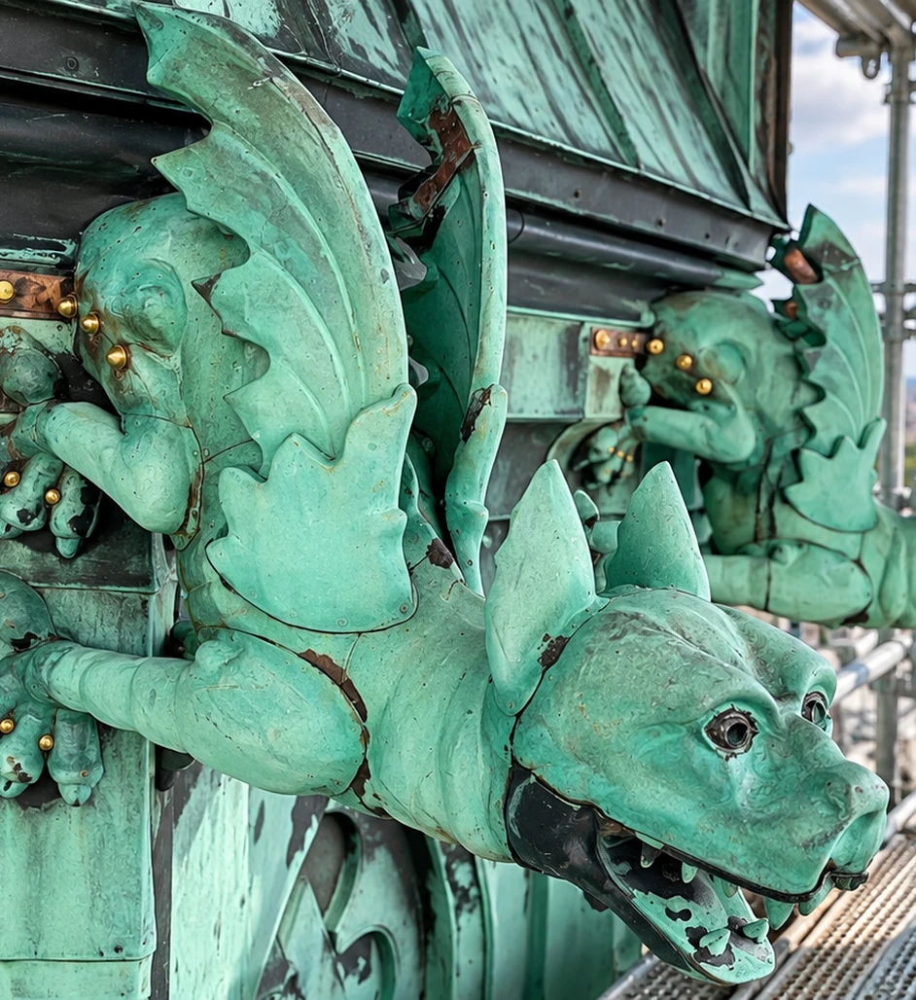

J. NORBERG PLÅTSLAGERI
Restaurering
Restaurering av äldre och kulturhistoriska byggnader med respekt för originalets uttryck.
Varsam restaurering av kulturhistoriska byggnader med traditionella metoder och materialkunskap.
UTVALDA ARBETEN
Projekt inom restaurering
Projekt och referenser publiceras här.
Har du ett projekt i åtanke?
Kontakta oss →